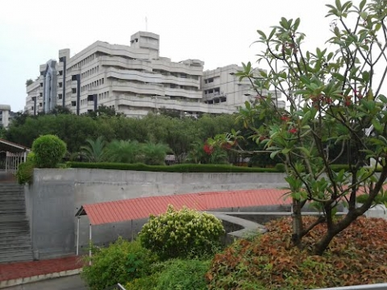

VIT Technology Tower

VIT Technology Tower
The grand Technology Tower, popularly known as TT ,
is an architectural marvel. It was inaugurated by Honourable Justice Mr. Doraiswamy Raju
f the Supreme Court of India, in the presence of Dr. K Venkatasubramanian, a member of the
Planning Commission of India, Dr. G Viswanathan, Chancellor and Sri G.V Selvam, Vice President.
The building consists of 7 floors, boasts of two conference halls – conference Hall @ TBI with
a capacity of 20 and 454 sq. ft. in area and Conference Hall @ TIFAC with a capacity of 14 and
300 sq. ft. in area. It also has several auditoriums such as Dr. B.R Ambedkar auditorium with
a capacity of 198 and 2447 sq. ft. in area and Kamaraj auditorium with a capacity of 128 and
2447 sq. ft. in area. It also currently houses 4 schools - SELECT, SENSE, SAS,& SSL along with
TBI, CNR (NANO TECHNOLOGY), CBST, TIFFAC-CORE and Academic Staff College. It is well known
for having a cooler temperature even during summer, thanks to its remarkable construction
and architecture. Standing tall in the middle of the campus, it neighbours the Food Court
and Girls Hostel in the campus.